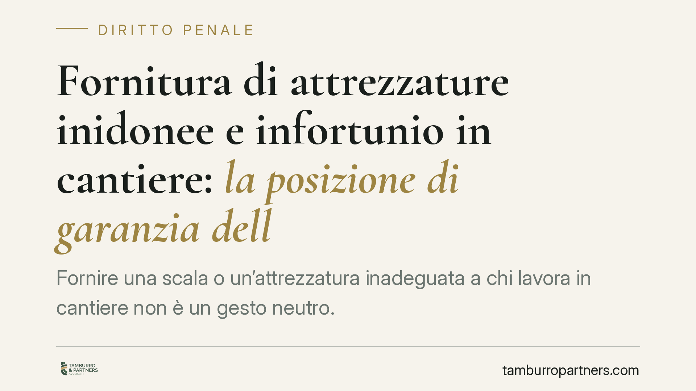

Fornitura di attrezzature inidonee e infortunio in cantiere: la posizione di garanzia dell'appaltatore
Fornire una scala o un'attrezzatura inadeguata a chi lavora in cantiere non è un gesto neutro. Secondo un orientamento della Cassazione penale, l'appaltatore che si ingerisce nell'esecuzione dei lavori assume una posizione di garanzia e può rispondere penalmente delle lesioni subite dal lavoratore, anche se autonomo. Vediamo su quali basi normative e con quali conseguenze pratiche per le imprese.

Il principio: effettività, non qualifica formale
In materia di sicurezza sul lavoro il diritto penale non guarda alle etichette contrattuali, ma a chi esercita in concreto i poteri di organizzazione e direzione. È il cosiddetto principio di effettività.
Su questo fondamento la giurisprudenza di legittimità ha più volte affermato che chi fornisce attrezzature inidonee a un lavoratore — anche formalmente autonomo — può assumere una posizione di garanzia e rispondere delle lesioni colpose che ne derivino. La fornitura di una scala inadeguata, per esempio, è stata letta come indice di ingerenza nell'esecuzione dei lavori.
> Nota redazionale: la sentenza segnalata dalla fonte (indicata come n. 16549/2026) riporta un anno non verificabile alla data di redazione. Preferiamo quindi esporre il principio giuridico consolidato, senza ancorarlo a un estremo non confermato. Il riferimento andrà verificato prima di ogni utilizzo in sede difensiva.
Inquadramento normativo
Il primo appiglio è l'art. 299 del D.Lgs. 81/2008, che estende gli obblighi del datore di lavoro (e delle altre figure della prevenzione) a chi, pur privo di regolare investitura, esercita di fatto i relativi poteri giuridici. È la traduzione normativa del principio di effettività: conta l'esercizio concreto dei poteri direttivi, non la qualifica sulla carta.
Nei rapporti di appalto e d'opera assume rilievo anche l'art. 26 del D.Lgs. 81/2008, che impone obblighi di cooperazione e coordinamento tra committente, appaltatore e lavoratori. Quando un soggetto mette a disposizione mezzi e attrezzature, entra nell'organizzazione del lavoro altrui e può attivare quei doveri di verifica e coordinamento.
Infine, il fondamento generale della responsabilità per omesso impedimento è l'art. 40, comma 2, c.p.: non impedire un evento che si ha l'obbligo giuridico di impedire equivale a cagionarlo. La posizione di garanzia è precisamente l'obbligo che consente di imputare l'evento a chi non lo ha prevenuto.
Ingerenza rilevante e fornitura neutra: una distinzione da fare
Non ogni consegna di uno strumento genera responsabilità. Occorre distinguere.
Si ha ingerenza rilevante quando la fornitura si inserisce in un'organizzazione dei lavori gestita dall'appaltatore: attrezzature messe a disposizione stabilmente, scelta dei mezzi imposta al lavoratore, direzione o coordinamento di fatto dell'attività. In questi casi chi fornisce entra nel governo del rischio e ne assume la relativa garanzia.
Diversa è la fornitura occasionale e neutra, in cui il lavoratore autonomo utilizza in piena autonomia mezzi propri o riceve un ausilio episodico che non incide sull'organizzazione del cantiere. Qui la posizione di garanzia in capo al fornitore è più difficilmente configurabile.
La linea di confine non è astratta: si accerta caso per caso, valutando chi decideva come e con quali mezzi si lavorava.
Nesso causale e colpa specifica
La posizione di garanzia è condizione necessaria ma non sufficiente. Perché scatti la responsabilità penale occorre anche:
- un nesso di causalità tra la condotta (la fornitura dell'attrezzo inidoneo) e l'evento lesivo, verificato secondo il criterio della condizione necessaria e dell'alto grado di probabilità logica;
- una colpa specifica, ossia la violazione di regole cautelari — tipicamente quelle sull'idoneità delle attrezzature di lavoro (Titolo III del D.Lgs. 81/2008).
L'idoneità dell'attrezzatura, in particolare, non è un requisito formale: una scala priva dei requisiti di stabilità o non adeguata all'altezza di lavoro può integrare la violazione cautelare rilevante.
Cosa cambia per l'impresa appaltatrice
Per chi opera in cantiere il messaggio è chiaro: mettere a disposizione mezzi e attrezzature comporta responsabilità che vanno oltre il rapporto contrattuale con l'autonomo. La qualifica del collaboratore come "lavoratore autonomo" non basta, da sola, a escludere ogni profilo di garanzia se l'impresa si è ingerita nell'organizzazione del lavoro.
Cosa fare in concreto
- Verificate l'idoneità di ogni attrezzatura fornita: conformità, marcatura, adeguatezza alla lavorazione e all'altezza di lavoro, con controlli periodici documentati.
- Tracciate la fornitura: registrate cosa viene consegnato, a chi, in che stato, con verbale o documento di consegna. La documentazione è una linea difensiva concreta.
- Definite per iscritto i confini organizzativi nei contratti d'appalto e d'opera: chi fornisce i mezzi, chi dirige, chi risponde del coordinamento ex art. 26.
- Attivate cooperazione e coordinamento reali con gli altri operatori, non solo formali: riunioni, DUVRI aggiornato, informazione sui rischi.
- Rivolgetevi a un professionista in caso di infortunio: la valutazione della posizione di garanzia e del nesso causale richiede analisi puntuale del singolo cantiere.
Disclaimer
Contributo informativo a cura di Tamburro & Partners - Avv. Giuseppe Tamburro. Non costituisce parere legale.
Ogni condominio ha una storia a sé.
Se gestisci un'amministrazione e vuoi un confronto su una specifica questione condominiale, scrivi allo studio. Ti rispondiamo entro un giorno lavorativo.